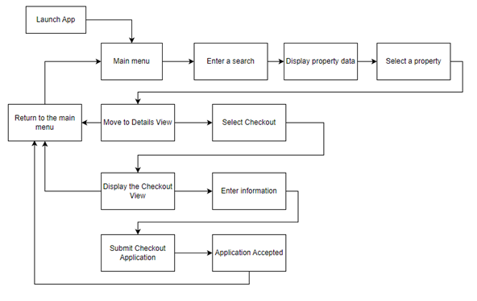
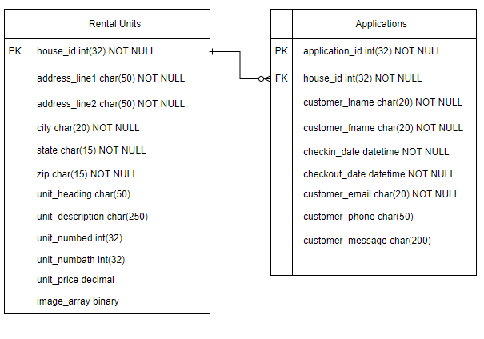

Project Goals | User Stories | Diagrams | Working as a Team | Link to the Project | Main
BNB:B is an alternative bed and breakfast app. It will allow customers to search any area in the United States for homes to rent and also allow them to submit a rental application form to the owner. Our app will have an innovative style which will make finding rental homes simpler than on other apps. We will use an API to pull data modeling homes for rent and then display that data to the customer based on their search criteria. The customer will then be able to view additional details about each search result. If they like the home, and want to rent it, then they click on the apply button to contact the owner to arrange a rental date.
On a larger scale our app is designed to be used anywhere in the world using a variety of currencies and complying with various national laws. For now we will only focus on rental properties located within the United States. Eventually BNB:B will include additional features such as the ability to schedule a rental appointment far in advance, submit your own rental properties and manage applications, as well as leave ratings for properties that you have stayed at in the past. Our minimum viable product will include a home view with a search function, where the customer will be able to search for rental properties, based on search terms that relate to the building data. The system will then pull data from the API to display information which matches the customer’s search criteria. The customer will then be able to select a property, which will take them into another view which will display more information about the property. At that point the customer will have the option to hit the apply button. From there, they will enter an application view which contains a form. When that form is submitted their application will be saved by the app and sent to the property owner for their consideration. Our app does not deal with bank transactions, it only arranges contact between the property owner and the customer. Our app will be designed for desktops, tablets and mobile phones. The app will run in a web browser. We will incorporate ADA compliant designs into our prototype and iterate until we have ADA compliance. We will design our application as both a desktop and mobile webpage, so it will be responsive to both platforms.
|  |  |
My role in the development of this project was as the leader of the team / project manager. I contributed heavily to the effort to document our work, keep track of changes, assign task and assist with development where needed. I was selected to lead to team because I have worked on a similar project before with the same professor. My goal has been to help us develop into a well coordinated team where we are all contributing in the area where we are most effective while learning from one another about areas where we lack competency. Our team consists of very bright individuals who are already motivated and excited to work on a project together. The greatest challenge is making sure that everyone has a task to work on during the week in between our group meetings. When we meet as a group, we all have something to show and contribute to the development of our project.
By taking this class and working on this project, I was given my first taste of what it's like to develop software with a group of strangers. Some of my assumptions about what my classmates would already know or think when I describe my plans to them were completely wrong. Working on this project helped me recognize the importance of being on the same page. Design documentations goes a long way toward ensuring that each team member is designing their part to work with each other part.
This project has taught me that I do enjoy working with people, and helping them grow professionally, I hope I have opportunities to do so throughout my career.
At this time, my group is still meeting and we are continuing to work on the bnb-b project. I don't see us continuing the project after the course ends. We chose a very simple concept intentionally so that we could test the waters of working with other people. I believe if we were to work on another project it would be more substantial.
Our app is not currently published, but you can find the source files here...
Project Goals | User Stories | Diagrams | Working as a Team | Link to the Project | Main